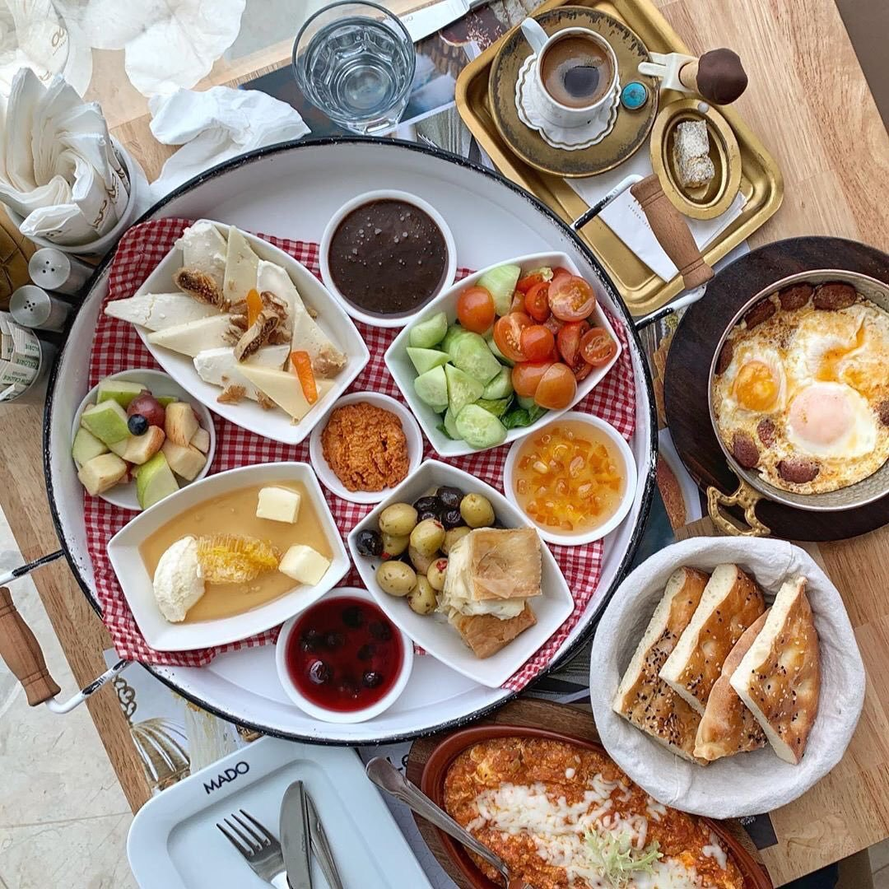

Турки с радостью зовут друг друга на завтрак. Утренний прием пищи — кахвалти — превращен в настоящий церемониал с изобилием блюд, непременно в красивой сервировке. Нередко завтрак перетекает в бранч..Специального набора блюд для завтрака не существует, но чаще всего к столу подают: свежие овощи,
орехи, вареные яйца, оливки и маслины, хлеб и выпечку, сливочное масло, мед и джемы.Турки явно адепты мнения,что самый главный прием пищи — это завтрак.

Симит
Кунжутная румяная булочка, внешне напоминающая бублик. Симит подают к завтраку или в качестве перекуса к кофе.Можно смазать сливочным маслом и джемом, а можно купить у уличного торговца и съесть на ходу, гуляя и рассматривая местные достопримечательности.
Чорба
Суп в Турции – это несколько иное кушанье, нежели мы привыкли думать: обычно он представляет собой густую субстанцию из перемолотых ингредиентов и больше напоминает суп-пюре.Они насыщенные и густые, чаще всего готовят их на основе томатов и чечевицы. Для сытности и получения нужной консистенции добавляют рис.